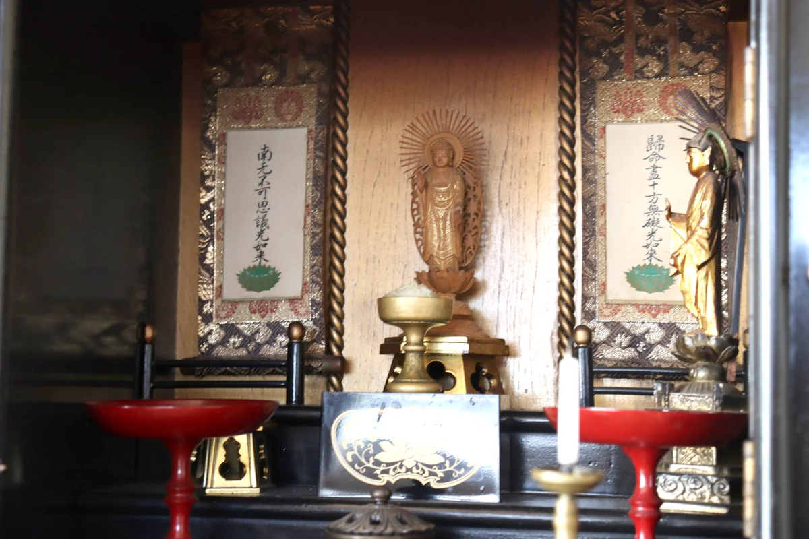
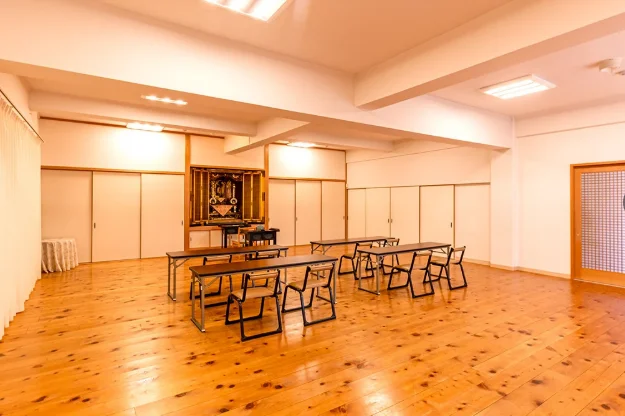
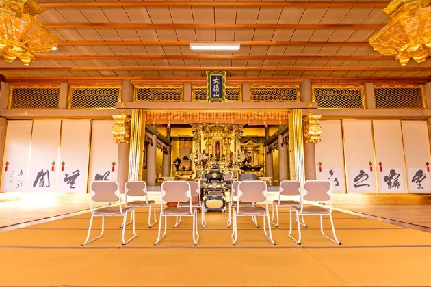
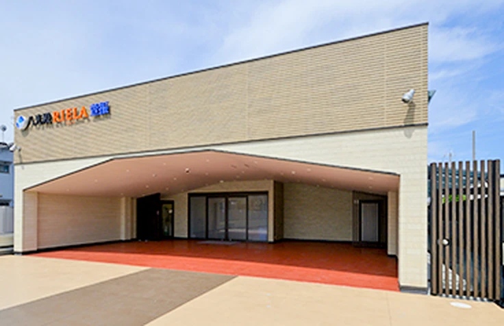
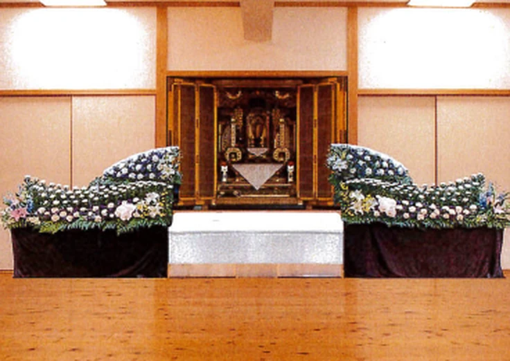

法事・葬儀のご相談
法事・葬儀のご相談
わからないことは、ひとつずつご説明します。どうぞお気軽に。
年忌法要（法事）
一周忌・三回忌・七回忌など、ご家族が集い、み教えにふれるご縁の場です。
2027年（令和9年）の年忌早見表
- 一周忌
- 2026年（令和8年）にご往生の方
- 三回忌
- 2025年（令和7年）
- 七回忌
- 2021年（令和3年）
- 十三回忌
- 2015年（平成27年）
- 十七回忌
- 2011年（平成23年）
- 二十三回忌
- 2005年（平成17年）
- 二十五回忌
- 2003年（平成15年）
- 三十三回忌
- 1995年（平成7年）
- 五十回忌
- 1978年（昭和53年）
ご命日の前後、ご家族の集まりやすい日にお勤めします。日にちはお気軽にご相談ください。
法事の会場
ご法事は、ご自宅でもお寺でもお勤めします。

ご自宅
お仏壇の前でお勤めします。日時をご相談ください。

お寺・1階ホール
冷暖房完備。イス席です。

お寺・2階本堂
ご本尊の前でお勤めします。イス席で、エレベーターで上がれます。
お寺・合同墓／納骨堂の前
合同墓、納骨堂の前でお勤めします。雨の日は室内に移ります。
お寺の会場はすべてイス席ですので、足腰に不安のある方も安心です。境内に車を停めて、すぐお参りいただけます。お布施の目安は、お申し込みの際にお伝えしますので、ご遠慮なくおたずねください。
葬儀のご相談
もしものときは、まずお寺へお電話ください。葬儀社がまだ決まっていなくても大丈夫です。

葬儀会館
ご希望の葬儀会館へうかがい、お勤めします。

お寺
恵光寺で葬儀をお勤めすることもできます。ご家族の人数やご希望に合わせて、8種類のプランからお選びいただけます。くわしくはご相談ください。
- 1 お寺へご連絡090-3949-6834 へお電話ください。
- 2 日程のご相談ご家族・葬儀社と、通夜・葬儀の日程を決めます。
- 3 通夜・葬儀浄土真宗本願寺派の作法でお勤めし、法名をお授けします。
よくあるご質問
Q. 法事はいつまでに申し込めばいいですか？
A. 候補日が決まったら、できるだけ早めにご連絡ください。LINEでも受け付けております。土曜・日曜やお彼岸・お盆の前後は予定が重なりやすいので、2〜3か月前までにご相談いただくと安心です。
Q. 恵光寺の門徒でなくても、法事や葬儀をお願いできますか？
A. はい、ご相談ください。浄土真宗本願寺派の作法でお勤めします。わからないことがあれば、そのままおたずねください。
Q. 「戒名」ではなく「法名」と聞きました。何が違いますか？
A. 浄土真宗では、仏弟子としての名前を「法名」といいます。きびしい修行をした証しとしての名前ではなく、阿弥陀さまのみ教えに生きる者としていただく名前です。生きているうちに「帰敬式（おかみそり）」を受けて、法名をいただくこともできます。
Q. お花やお供えは用意したほうがいいですか？
A. お寺でご法事やご葬儀をお勤めする場合は、お花はこちらでご用意します。お供えは、ご家族で用意されたいものがあればお持ちください。お供え用の台もご用意しております。
Q. 足が悪いのですが、本堂まで上がれますか？
A. はい。境内に車を停めて、エレベーターで2階の本堂まで上がれます。お寺の会場はすべてイス席です。
Q. お仏壇のことも相談できますか？
A. はい。お仏壇を新しくするとき、お引越しのとき、手放されるときなど、どの場合もお勤めがありますので、お気軽にご相談ください。